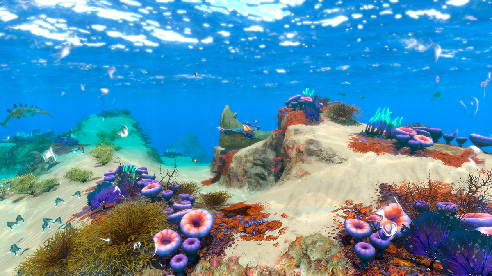
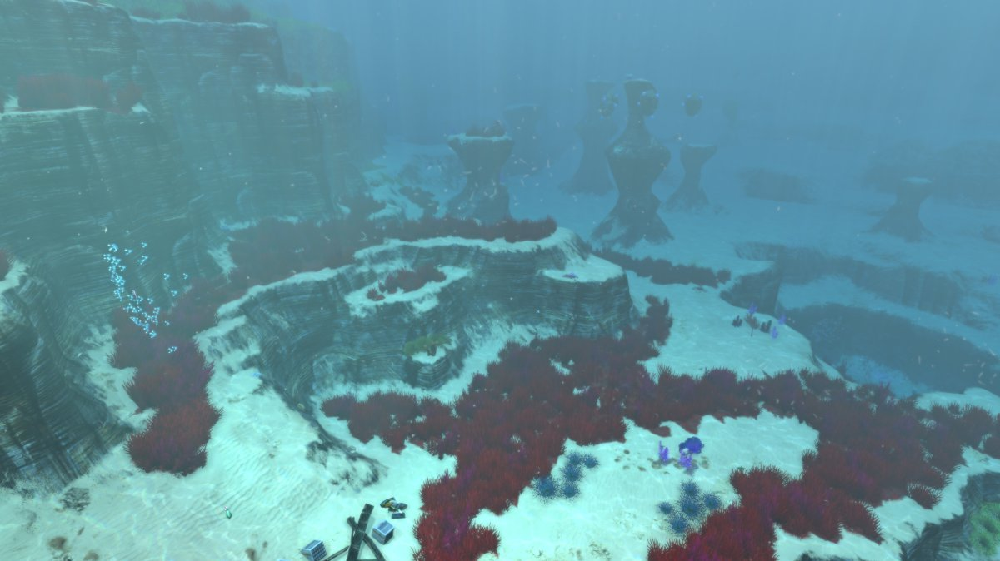
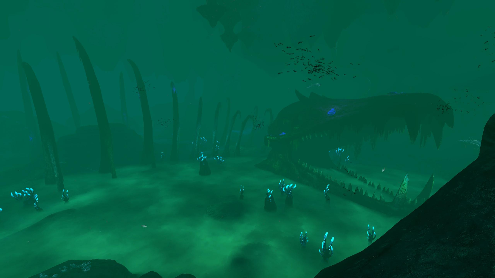
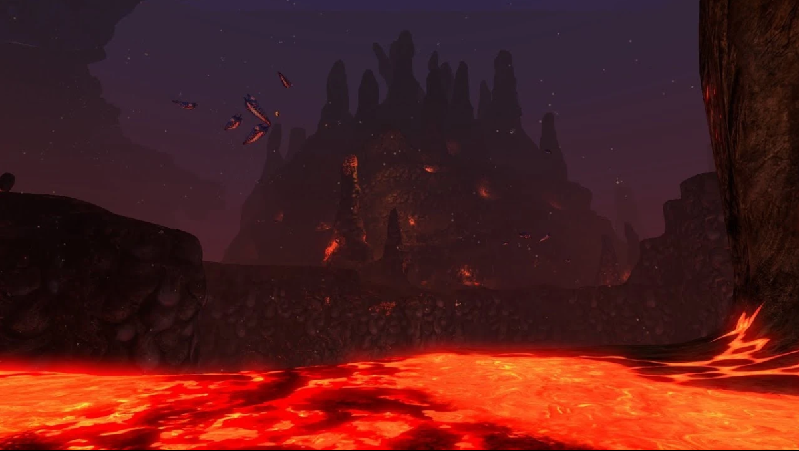
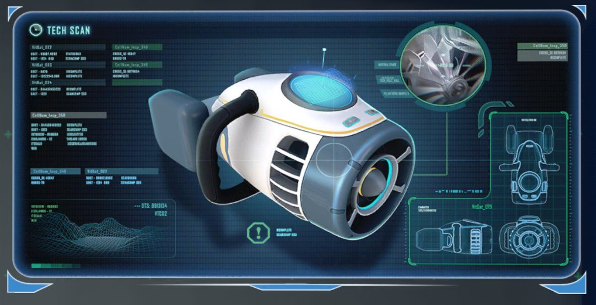
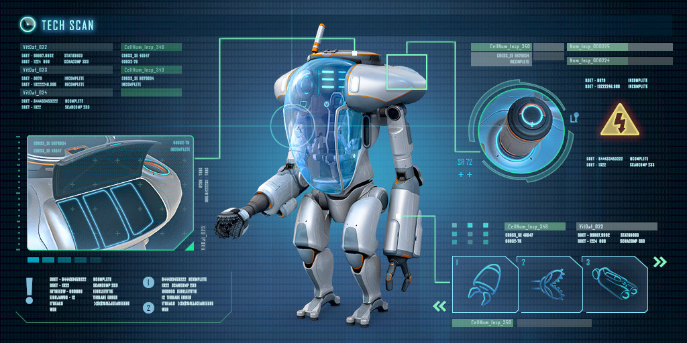
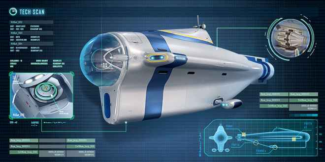
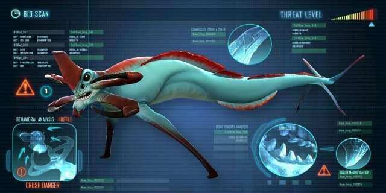

Advertencia
Criatura de gran tamaño detectada
Subnautica: Supervivencia en 4546B
Tu nave, el Aurora, ha impactado en un mundo oceánico desconocido. La cápsula salvavidas donde te encuentras es tu único refugio en la superficie para sobrevivir y escapar. Ve a la wiki de Subnautica.
Los Arrecifes Seguros (Safe Shallows)
En los primeros metros bajo el agua, la luz solar ilumina el ecosistema logrando que sea colorido y lleno de recursos como titanio, cobre y cuarzo entre otros, también logrando tener especies no hostiles en esa zona.

Arrecifes iniciales analizados
Zonas Profundas
Después de los 500m se empieza a hacer peligroso, debido a que entramos a las zonas con aparición de leviatanes. La presión aumenta y la luz escasea.
-
Gran Arrecife y Cuevas (Grand Reef | 300 - 500m):
Estructuras orgánicas flotantes, profundas grietas bioluminiscentes y ruinas humanas.
• Datos clave: Hábitat del Cangrejoserpiente (Crabsnake) y ubicación de la base abandonada Degasi. Primeras vetas de Magnetita y Litio expuesto.

-
Río Perdido (Lost River | 600 - 900m):
Extenso complejo cavernoso recorrido por ríos subterráneos de salmuera ácida verde.
• Datos clave: Contiene laboratorios de los Precursores y fósiles de leviatanes extintos. Abundancia de Níquel, Uraninita y presencia del Ghost Leviathan juvenil.

-
Zona Volcánica Inactiva y Activa (900 - 1400m+):
El punto más profundo del mapa, rodeado de ríos de magma con temperaturas superiores a 700°C.
• Datos clave: Requiere el Prawn Suit con módulo de profundidad máximo. Fuente primordial de Kyanita y ubicación de la Instalación de Contención Primaria.

Vehículos de Subnautica
-
Seaglide (Propulsor de Mano):
Dispositivo compacto de propulsión personal equipado con luces y pantalla holográfica 3D.

Único por: Su radar topográfico integrado y alta movilidad inicial sin bahía de construcción.
-
Seamoth (Sumergible Personal):
Mini-sumergible monoplaza para exploración rápida en aguas de media profundidad.
 Único por: Sus módulos de mejora intercambiables (como defensa eléctrica o sonar) y capacidad de acoplamiento.
Único por: Sus módulos de mejora intercambiables (como defensa eléctrica o sonar) y capacidad de acoplamiento.
-
Prawn Suit (Exotraje Mecánico):
Traje bipedal blindado para soportar presiones extremas en los abismos.

Único por: Su física de caminata sobre el lecho marino con propulsores de salto y brazos modulares (taladro y gancho).
-
Cyclops (Submarino Industrial):
Submarino de gran tamaño que funciona como una base móvil autosuficiente.

Único por: Permitir construcciones en su interior, gestión de velocidad por marchas y sistema de evasión ante Leviatanes.
Minerales y Recursos
Materiales clave recolectados en el planeta 4546B:
- Superficie (0 - 100m): Titanio, Cobre y Cuarzo (para estructuras, baterías y vidrio).
- Media (100 - 400m): Oro, Plata, Litio y Diamantes (para circuitos, refuerzos y mejoras).
- Profundidades (400m+): Niquel, Kyanita y Uraninita (para tecnología avanzada y celdas avanzadas).
Fauna Hostil: Leviatanes
Organismos de más de 20 metros clasificados como amenaza extrema en 4546B:
-
Reaper Leviathan (Segador):

Habita en zonas de transición y restos del Aurora. Utiliza ecolocalización; si escuchas su rugido, ya te localizó.
-
Ghost Leviathan (Fantasma):
 Criatura translúcida y bioluminiscente que custodia las fosas abisales y zonas vacías del mapa.
Criatura translúcida y bioluminiscente que custodia las fosas abisales y zonas vacías del mapa.
-
Sea Dragon Leviathan (Dragón Marino):
 El coloso de las profundidades volcánicas, capaz de lanzar proyectiles de magma fundido.
El coloso de las profundidades volcánicas, capaz de lanzar proyectiles de magma fundido.